GitHub と連携する：送る・受け取る
- ローカルとリモートの違いを、説明できる
- 自分のパソコンの記録を、GitHub に送れる（
push） - GitHub の記録を、コピーして取ってこれる（
clone） - GitHub での変更を、自分のパソコンに受け取れる（
pull）
4-1. ローカルとリモート
第3章で作った記録は、自分のパソコンの中だけにありました。これをローカルリポジトリといいます。GitHub に置く、インターネット上のリポジトリはリモートリポジトリです。この章では、2つの間で記録をやりとりします。
| 言葉 | 意味 | 名前の由来 |
|---|---|---|
| リモート（remote） | 離れた場所にあるリポジトリ。GitHub 上のもの | remote ＝ 遠く離れた |
origin | リモートに付ける、いつもの名前（「GitHub の、あのリポジトリ」の呼び名） | origin ＝ もと、起点 |
push | 自分の記録を、リモートに送る | push ＝ 押し出す |
pull | リモートの記録を、自分のパソコンに受け取る | pull ＝ 引っ張る |
clone | リモートを、まるごと自分のパソコンに複製する | clone ＝ 複製 |
4-2. GitHub に「自分だ」と伝える仕組み
GitHub に記録を送るには、「これは自分だ」と GitHub に伝える（認証する）必要があります。GitHub は、Git での操作に、パスワードを使えません。代わりに、Git for Windows に入っている「Git Credential Manager」が、ブラウザを開いて、ログインを手伝ってくれます。
- 初めて
git pushを打つと、ブラウザの画面（またはウィンドウ）が開く - GitHub に、ログインする
- 「許可しますか？」と聞かれたら、許可（Authorize）する
- ターミナルに戻ると、送信が進んでいる
一度許可すると、パソコンが覚えてくれるので、次からは聞かれません。
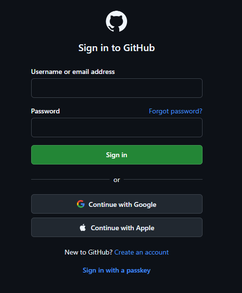
4-3. 実際にやってみよう
この章では、一人で、「二人分」の動きを体験します。同じ GitHub のリポジトリから、フォルダを2つ作って、「あなた」と「もう一人のあなた（別のパソコン役）」のように使い分けます。
C:\work の中で
これまでと同じく、OneDrive の外にある C:\work の中で行います。
手順1：設定を1つ足す（一度だけ）
git config --global pull.rebase false他の人の変更を取り込む git pull の「動き方」を決める設定です。今は、「後で出てくる、つまずきを防ぐための設定」と思って、そのまま打ってください（第5章で意味が分かります）。
手順2：GitHub に、空のリポジトリを作る（ブラウザで）
GitHub の画面は、英語で表示されます。英語と日本語の対応を、下に書いておきます。
- ブラウザで https://github.com を開き、ログインする
- 右上の自分のアイコン（丸い写真）をクリックし、メニューから「Repositories」（リポジトリの一覧）を選ぶ
- 一覧の画面の右側にある、青い「New」ボタンをクリックする（右上の
＋→ 「New repository」からも、同じ画面に行ける） - 「Repository name」に
my-notesと入力する（「Owner」は、自分のユーザー名のままでよい） - 「Choose visibility」は、初期値が「Public」（誰でも見られる）です。「Private」（自分だけが見られる）に変える
- 「Add README」は「Off」のままにする。「Add .gitignore」は「No .gitignore」、「Add license」は「No license」のままにする（すべて空のまま）
- 右下の青い「Create repository」をクリックする
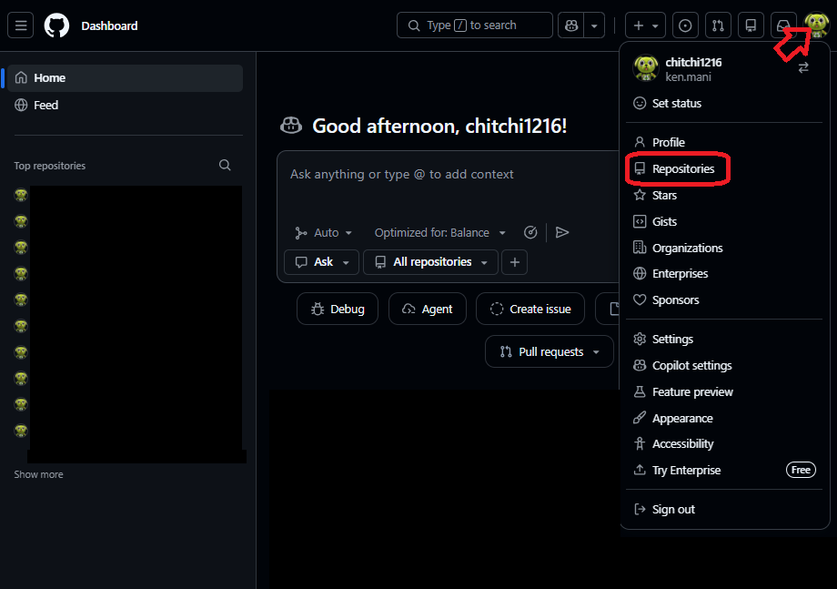
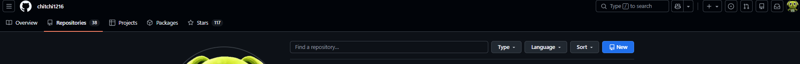
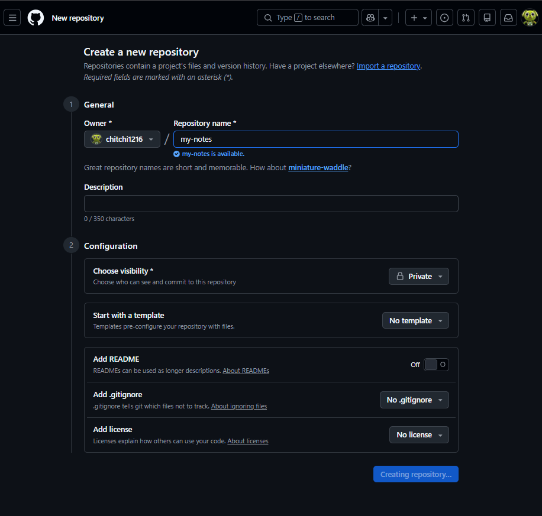
my-notes と入力すると、「my-notes is available.」（その名前は使えます）と出ます。「Private」を選び、「Add README」は「Off」のままで、右下の「Create repository」を押します（押すと「Creating repository…」と表示されます）| 画面の表示（英語） | 意味 |
|---|---|
Create a new repository | 新しいリポジトリを作る |
Owner | 持ち主（自分のユーザー名） |
Repository name | リポジトリの名前 |
Description | 説明（空でよい） |
Choose visibility / Public / Private | 公開範囲を選ぶ／誰でも見られる／自分（と招待した人）だけ |
Add README / Add .gitignore / Add license | README を足す／記録しないファイルの指定を足す／ライセンスを足す（今回はすべて足さない） |
Create repository | リポジトリを作る（実行ボタン） |
my-notes）を、GitHub に送ります。GitHub 側に先にファイルがあると、記録が食い違って、送れなくなります。空のまま作ってください。
作ると、次のような画面になります。「…or push an existing repository from the command line」（既存のリポジトリを、コマンドで送る）という見出しのところに、3行のコマンドが出ます。その1行目の URL を、使います。
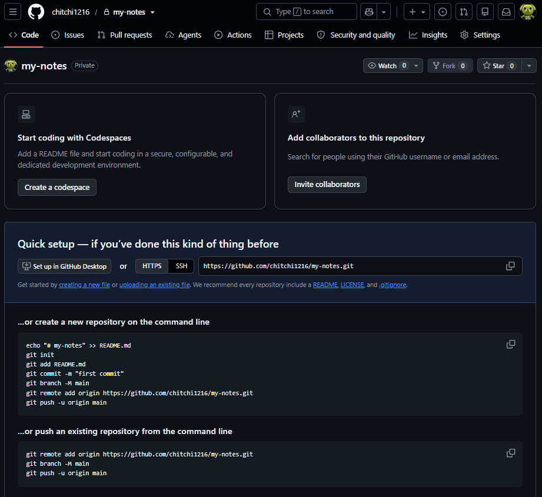
git remote add origin …（1行目）と、git push -u origin main（3行目）を使います。2行目の git branch -M main は、枝の名前を main にするコマンドですが、第3章の設定で、すでに main なので、打たなくて構いません（打っても、害はありません）。
手順3：ローカルと、リモートを結びつける
PowerShell で、第3章の my-notes に移動します。そして、GitHub に表示された URL をコピーして、次のコマンドを打ちます（ユーザー名 は、自分の GitHub ユーザー名です）。
cd C:\work\my-notes
git remote add origin https://github.com/ユーザー名/my-notes.git
git remote -vPS C:\work> cd C:\work\my-notes PS C:\work\my-notes> git remote add origin https://github.com/chitchi1216/my-notes.git PS C:\work\my-notes> git remote -v origin https://github.com/chitchi1216/my-notes.git (fetch) origin https://github.com/chitchi1216/my-notes.git (push)
「origin という名前で、この URL のリモートを登録する」という意味です。git remote -v で、登録を確認できます（fetch は受け取り用、push は送信用で、同じ URL が2行出ます）。
💡 remote add ＝「リモートを追加する」。-v は verbose（くわしく）の頭文字です。
Ctrl + V を押します。ユーザー名 の部分を、間違えやすいところです。
手順4：GitHub に送る（push）
git push -u origin main初めてのときは、ブラウザが開くので、ログインして許可してください（4-2）。送信が進むと、次のように表示されます（途中の行は、人によって違います）。
PS C:\work\my-notes> git push -u origin main Enumerating objects: 6, done. Counting objects: 100% (6/6), done. Delta compression using up to 8 threads Compressing objects: 100% (3/3), done. Writing objects: 100% (6/6), 480 bytes | 480.00 KiB/s, done. Total 6 (delta 0), reused 0 (delta 0), pack-reused 0 (from 0) To https://github.com/chitchi1216/my-notes.git * [new branch] main -> main branch 'main' set up to track 'origin/main'.
[new branch] main -> main と出れば、送信できています。これで、2つのコミットが、GitHub に上がりました。
💡 git push -u origin main ＝「origin に、main を送る」。-u は、upstream（上流）の頭文字で、「今後は、この組み合わせを覚えて」という意味です。一度付ければ、次からは git push だけで済みます。
状態を見てみましょう。
git statusPS C:\work\my-notes> git status On branch main Your branch is up to date with 'origin/main'. nothing to commit, working tree clean
Your branch is up to date with 'origin/main' は、「自分の main は、GitHub の main と同じです」という意味です。
手順5：GitHub の画面で、確かめる
ブラウザで、https://github.com/ユーザー名/my-notes を開き直して（F5 で再読み込み）、次のことを確認してください。
hello.txtがある- 名前の横に「Private」と出ている
- 「Commits」の数が、自分が作ったコミットの数と同じ（第3章と第4章の手順どおりなら、2 Commits）。クリックすると、
git logと同じ履歴が見える
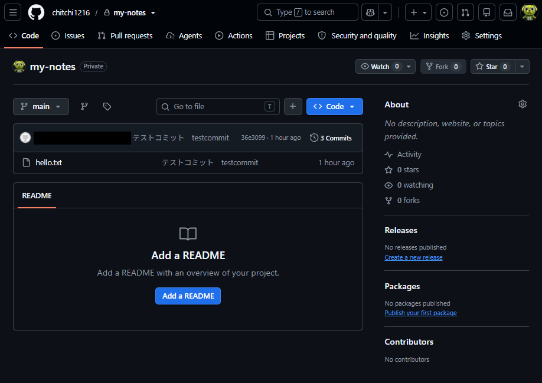
push のあとの、GitHub のリポジトリ画面。hello.txt と、最新のコミットのメッセージ、「3 Commits」（コミットの数）が見えます（この写真は、コミットを3つ作った人のものです）。記録した人の名前（user.name）が、左上に出るので、第0章の設定が大切です。（メールアドレスは、黒く塗りつぶしてあります）手順6：clone で、もう一人の自分を作る
次に、同じリポジトリを、別のフォルダに複製します。まず、C:\work に移動してから、clone します。
cd C:\work
git clone https://github.com/ユーザー名/my-notes.git my-notes-copy
cd my-notes-copy
git log --onelinePS C:\work> git clone https://github.com/chitchi1216/my-notes.git my-notes-copy Cloning into 'my-notes-copy'... remote: Enumerating objects: 6, done. remote: Counting objects: 100% (6/6), done. remote: Compressing objects: 100% (3/3), done. remote: Total 6 (delta 0), reused 0 (delta 0), pack-reused 0 (from 0) Receiving objects: 100% (6/6), done. PS C:\work> cd my-notes-copy PS C:\work\my-notes-copy> git log --oneline 7b1e4d8 (HEAD -> main, origin/main, origin/HEAD) Add second line to hello.txt 3f2a9c1 Add hello.txt
履歴も、ファイルも、そっくりそのまま複製されました。git clone URL 新しいフォルダ名 の形で、新しいフォルダが作られます。my-notes-copy は、もう一人のあなたの、作業場所です。
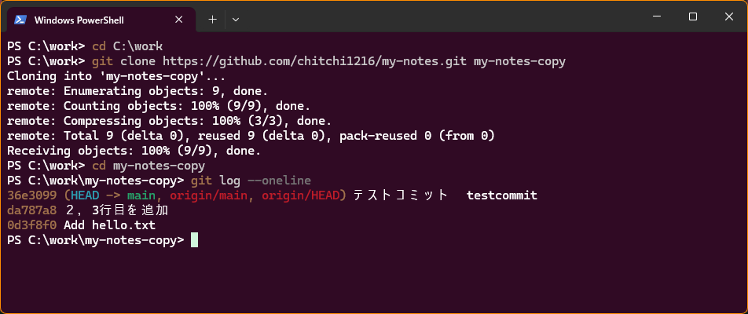
Cloning into 'my-notes-copy'... のあと、git log --oneline で、my-notes と同じ履歴（origin/main などの目印つき）が見えます。数字や、記録のメッセージは、人によって違いますclone は、リポジトリの「外」で
clone を、my-notes のようなリポジトリの中で打ってはいけません。リポジトリの中に、リポジトリができてしまい、混乱のもとになります。必ず、C:\work に移動してから打ってください。
my-notes-copy）を、付け忘れない
git clone URL だけで、フォルダ名を付けないと、Git は、リポジトリと同じ名前（my-notes）の新しいフォルダを作ろうとします。今回は、C:\work に、第3章で作った my-notes が、すでにあるので、次のエラーになります。
PS C:\work> git clone https://github.com/chitchi1216/my-notes.git fatal: destination path 'my-notes' already exists and is not an empty directory.「
my-notes という場所は、すでにあって、空ではありません」という意味です。壊れてはいません。URL のあとに、半角スペースを空けて、別の名前（my-notes-copy）を付けて、打ち直してください。
git clone https://github.com/ユーザー名/my-notes.git my-notes-copygit init と git clone の違い
git init は、手元のフォルダを、新しいリポジトリにするものです。git clone は、すでにあるリポジトリ（GitHub など）を、まるごと複製するものです。clone すると、origin の設定も、自動で済みます。
手順7：コピー側で変更して、push する
my-notes-copy にいる状態で、hello.txt に3行目を足して、記録し、GitHub に送ります。
notepad hello.txtthird line と1行足して、最後に Enter で改行して保存し、閉じます。続けて、次を打ちます。
git add hello.txt
git commit -m "Add third line"
git pushPS C:\work\my-notes-copy> git add hello.txt PS C:\work\my-notes-copy> git commit -m "Add third line" [main c5d2e8a] Add third line 1 file changed, 1 insertion(+) PS C:\work\my-notes-copy> git push Enumerating objects: 5, done. Counting objects: 100% (5/5), done. Delta compression using up to 8 threads Compressing objects: 100% (2/2), done. Writing objects: 100% (3/3), 280 bytes | 280.00 KiB/s, done. Total 3 (delta 0), reused 0 (delta 0), pack-reused 0 (from 0) To https://github.com/chitchi1216/my-notes.git 7b1e4d8..c5d2e8a main -> main
今回は、git push だけで送れました。clone で作ったフォルダは、-u に当たる設定が、最初から入っているためです。
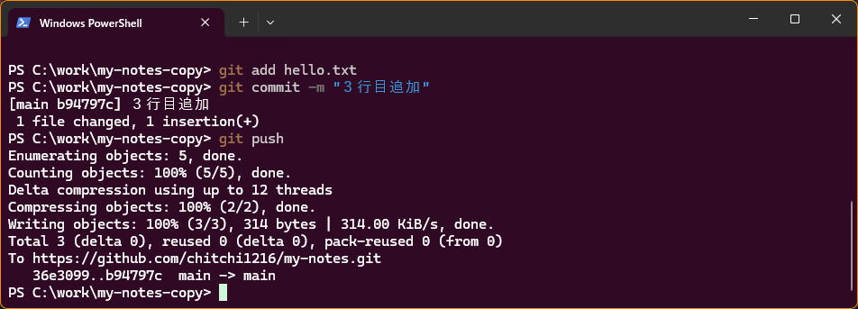
git add → git commit -m → git push。最後の 36e3099..b94797c main -> main は、「GitHub の main が、36e3099 から b94797c まで進んだ」という意味です。ID は、人によって違います手順8：元の側で、受け取る（pull）
今度は、最初のフォルダ my-notes に戻ります。ここでは、まだ3行目のことを知りません。
cd C:\work\my-notes
type hello.txt
git pull
type hello.txtPS C:\work\my-notes> type hello.txt hello git second line PS C:\work\my-notes> git pull remote: Enumerating objects: 5, done. remote: Counting objects: 100% (5/5), done. remote: Total 3 (delta 0), reused 0 (delta 0), pack-reused 0 (from 0) Unpacking objects: 100% (3/3), 294 bytes | 14.00 KiB/s, done. From https://github.com/chitchi1216/my-notes 7b1e4d8..c5d2e8a main -> origin/main Updating 7b1e4d8..c5d2e8a Fast-forward hello.txt | 1 + 1 file changed, 1 insertion(+) PS C:\work\my-notes> type hello.txt hello git second line third line
3行目が、受け取れました。「Fast-forward」は、「自分の記録を、そのまま先に進めただけ」という意味で、最も単純な受け取り方です。
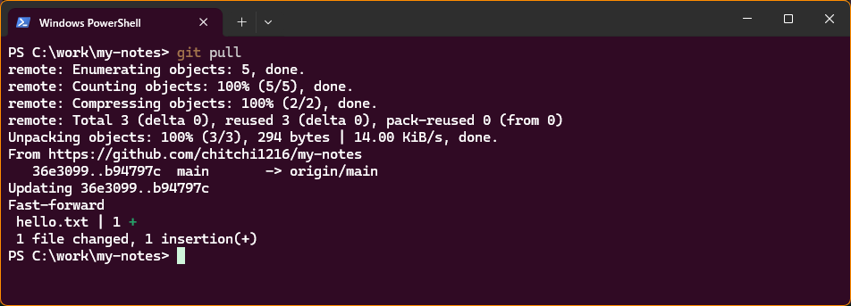
Updating 36e3099..b94797c と Fast-forward が出て、hello.txt が1行増えた（1 +）ことが分かります💡 pull は、fetch（取ってくる）と merge（合わせる）を、続けて行うコマンドです。merge は、第5章で学びます。
ここまでの流れ（まとめ）
| やりたいこと | コマンド |
|---|---|
| GitHub のリポジトリを、自分のパソコンに複製する（最初の1回） | git clone URL |
| 手元のリポジトリを、初めて GitHub に結びつける | git remote add origin URL → git push -u origin main |
| 自分の記録を、GitHub に送る | git push |
| GitHub の記録を、自分のパソコンに受け取る | git pull |
push しないでください。あとでファイルから消しても、過去の履歴の中に、残り続けます。Private のリポジトリでも、共同作業者には見えます。
☕ コーヒーブレイク：Git は「分散型」。GitHub が消えても、記録は残る？（読み飛ばしてOK）
手順6で clone したとき、履歴まで、まるごと複製されたことに気づきましたか？ これは、Git の大きな特徴です。Git は「分散型」と呼ばれる仕組みで、全員のパソコンの中に、完全な履歴のコピーがあります。
- もしものときに強い。GitHub のサービスが止まっても、誰かのパソコンに、全部の履歴が残っています。
- ネットがなくても作業できる。
commitやlogは、自分のパソコンだけで動きます。インターネットが必要なのは、pushとpullのときだけです。 - GitHub だけが Git の置き場ではない。GitLab、Bitbucket など、同じ仕組みの別のサービスもあります。
originを差し替えれば、同じ Git で使えます。
4-4. チャレンジ
必須ではありません。手順8までが終わった状態から始めます。
GitHub の画面（ブラウザ）で hello.txt を編集して、fourth line という4行目を足してください。そのあと、my-notes フォルダで、その変更を受け取って、中身を確かめましょう。
ヒント
GitHub のリポジトリ画面で hello.txt をクリックし、右上の鉛筆のマーク（Edit）を押すと、ブラウザで編集できます。最後の行の下に、fourth line と入力します。編集後は、右上の青い 「Commit changes...」を押し、出てくる画面で、次のように記録します。
| 画面の項目 | 入力・選択するもの |
|---|---|
Commit message | コミットのメッセージ。最初から、メッセージが入っています（GitHub が、変更の内容から提案してくれます。Add fourth line to hello.txt や Update hello.txt など）。内容が合っていれば、そのままで構いません。自分で書き直しても構いません |
Extended description | くわしい説明（任意）。空のままで構いません（「Add an optional extended description…」という、薄い文字は、入力の例です） |
Commit directly to the main branch | これを選んだままにします（main に、直接記録する）。Create a new branch for this commit and start a pull request は、第6章で使うので、今回は選びません |
最後に、右下の青い「Commit changes」を押して、記録します。
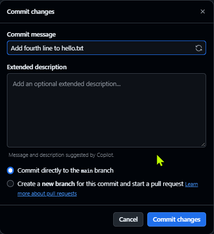
こたえと解説
GitHub で「Commit changes」を押すと、GitHub 側に新しいコミットができます。そのあと、手元で次を打ちます。
cd C:\work\my-notes
git pull
type hello.txt4行目が、手元に届いていれば成功です。これは、「別のメンバーが、GitHub 上で変更した」場面と同じです。GitHub の画面で直接編集できることも、覚えておくと便利です。
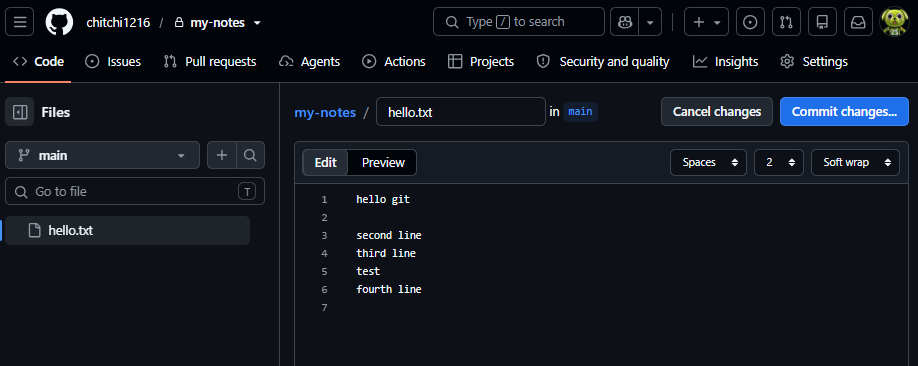
pull を打つ前に、「GitHub のほうが、自分より進んでいるか」を確かめる方法があります。チャレンジ1の編集を、もう一度、別の内容（fifth line）で行い、そのあと、pull はまだ打たずに、git fetch と git status を打って、表示を読んでください。
ヒント
fetch は、「GitHub の最新の情報を、取ってくるだけ」のコマンドです。自分のファイルは、まだ変わりません。
こたえと解説
git fetch
git statusPS C:\work\my-notes> git status On branch main Your branch is behind 'origin/main' by 1 commit, and can be fast-forwarded. (use "git pull" to update your local branch) nothing to commit, working tree clean
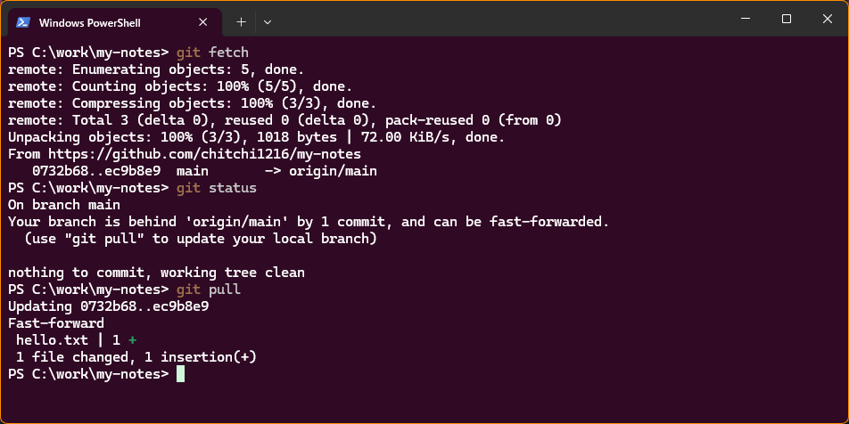
git fetch のあと、git status に「Your branch is behind 'origin/main' by 1 commit, and can be fast-forwarded.」と出ています。続けて git pull を打つと、Fast-forward で追いつきますbehind 'origin/main' by 1 commit は、「GitHub の main より、1コミット遅れています」という意味です。「fetch で確認 → pull で受け取る」と、2段階に分けると、受け取る前に、状況を確かめられます。
| コマンド | 働き | 手元のファイル |
|---|---|---|
git fetch | GitHub の最新情報を、取ってくるだけ | 変わらない |
git pull | 取ってきて、手元に合わせる | 変わる |
共同開発で、一番よく出会うエラーです。次の手順で、わざと起こして、直してみましょう。
my-notes と my-notes-copy の両方で git pull を打って、2つのフォルダを最新にしてから始めてください。最新でないと、手順1でも、拒否されてしまいます。
my-notes-copyで、copy.txtという新しいファイルを作って（New-Item copy.txt）、add・commit・pushする。my-notes（まだpullしていない）で、hello.txtにedit in originalと1行足して、add・commitする。my-notesで、git pushを打つ。
3で、何が起きますか？ どうすれば、送れるようになりますか？
ヒント
エラーメッセージの hint: の行に、答えが書いてあります。「GitHub には、自分が持っていない記録がある」と読めます。
こたえと解説
PS C:\work\my-notes> git push To https://github.com/chitchi1216/my-notes.git ! [rejected] main -> main (fetch first) error: failed to push some refs to 'https://github.com/chitchi1216/my-notes.git' hint: Updates were rejected because the remote contains work that you do not hint: have locally. This is usually caused by another repository pushing to hint: the same ref. If you want to integrate the remote changes, use hint: 'git pull' before pushing again. hint: See the 'Note about fast-forwards' in 'git push --help' for details.
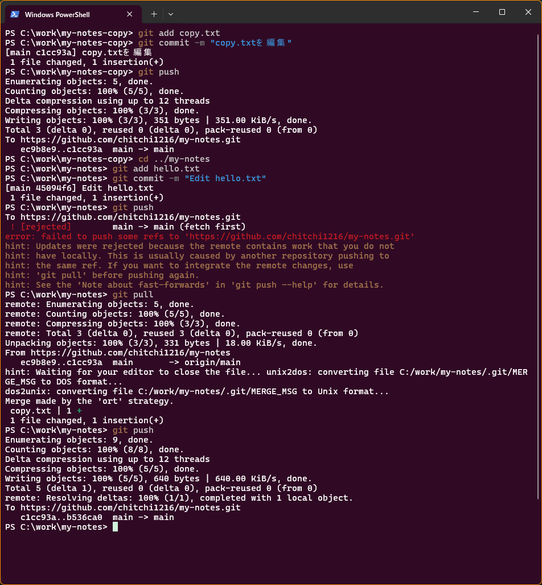
git push が、赤い文字で「! [rejected] main -> main (fetch first)」と拒否されています。git pull のあと（メモ帳を閉じたあと）に、もう一度 git push を打つと、main -> main で送れていますrejected（拒否された）と出ます。GitHub に、自分の知らない新しい記録（copy.txt のコミット）があるためです。GitHub は、「先に、その記録を取り込んでから、送って」と言っています。壊れてはいません。次のように、直します。
git pull
git pushgit pull を打つと、メモ帳が開くことがあります。Merge branch 'main' of … という1行が書かれた、「2つの流れを、合わせた」記録のメッセージです。何も変えずに、保存して（Ctrl + S）、メモ帳を閉じてください。すると、合わせる作業が終わります。メモ帳が開いている間は、ターミナルに hint: Waiting for your editor to close the file...（エディタが閉じるのを待っています）と出て、閉じると unix2dos / dos2unix の行が出ます。第3章と同じ、無視してよいお知らせです。そのあと git push で、送れます。
PS C:\work\my-notes> git pull From https://github.com/chitchi1216/my-notes c5d2e8a..5a13927 main -> origin/main hint: Waiting for your editor to close the file... unix2dos: converting file C:/work/my-notes/.git/MERGE_MSG to DOS format... dos2unix: converting file C:/work/my-notes/.git/MERGE_MSG to Unix format... Merge made by the 'ort' strategy. copy.txt | 1 + 1 file changed, 1 insertion(+) create mode 100644 copy.txt
「Merge made by …」は、2つの別々の変更が、ひとつに合わさったことを表します（第5章で、くわしく学びます）。今回は、別々のファイル（hello.txt と copy.txt）を変えたので、自動で合わさりました。同じファイルの同じ場所を変えると、自動では合わせられず、「コンフリクト」になります（第7章）。
git push --force は、使わない
ネットで、「拒否されたら git push --force」という手順を見かけることがあります。これは、GitHub の記録を、強制的に上書きして、他の人の記録を消してしまう危険な方法です。この教材では、使いません。拒否されたら、git pull してから git push です。
4-5. うまくいかないとき
| こんなとき | 確認すること |
|---|---|
| ブラウザが開かず、ログインできない | ターミナルに、ログイン用のウィンドウが隠れていないか。それでも出なければ、PowerShell を閉じて、もう一度 git push を打つ。管理者や、集まりの場で相談 |
Authentication failed（認証に失敗） | ログインした GitHub アカウントが、正しいか。このリポジトリを持っている人と、同じアカウントか |
Repository not found（見つからない） | URL の ユーザー名 や、リポジトリ名の綴りを確認する。git remote -v で、登録した URL を見る |
remote origin already exists | origin は、すでに登録済み。git remote -v で、URL が正しいか確かめる |
rejected（拒否） | チャレンジ3を見る。git pull してから、git push |
| どこにいるか分からない | pwd で場所を、git status で状態を確かめる |
確認クイズ
Q1. git push と git pull は、それぞれ、どちらの向きですか？
push は、自分のパソコン → GitHub（送る）。pull は、GitHub → 自分のパソコン（受け取る）。
Q2. git init と git clone の違いは？
git init は、手元のフォルダを、新しいリポジトリにする。git clone は、すでにあるリポジトリを、履歴ごと、まるごと複製する。
Q3. origin とは何ですか？
リモートリポジトリ（GitHub 上のリポジトリ）に付ける、いつもの名前。「もと」という意味。
Q4. 手元のリポジトリを GitHub に送るとき、GitHub 側のリポジトリを、空のまま作るのはなぜですか？
GitHub 側に先にファイル（README など）があると、記録が食い違って、送れなくなるため。
Q5. push が rejected されたとき、どうすればよいですか？ また、やってはいけないことは？
git pull で、GitHub の新しい記録を取り込んでから、git push する。git push --force（強制的に上書きする）は、他の人の記録を消す危険があるので、使わない。
話し合おう（月1回の集まり用）
- 初めて
pushしたとき、どんな気持ちでしたか？ GitHub の画面に自分の記録が出たとき、どう感じましたか？ - 「GitHub に送ったものは、消しても履歴に残る」ことを、どう思いますか？ チームで、気をつけるルールを決めるなら、何を入れますか？
- 「
pullを、いつ打つか」のルールを、4人のチームで決めるなら、どうしますか？（作業を始める前、など）